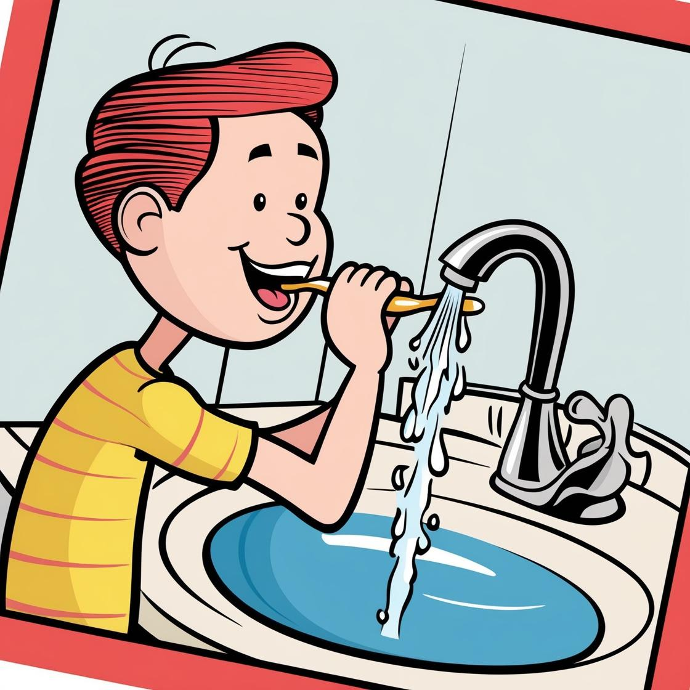
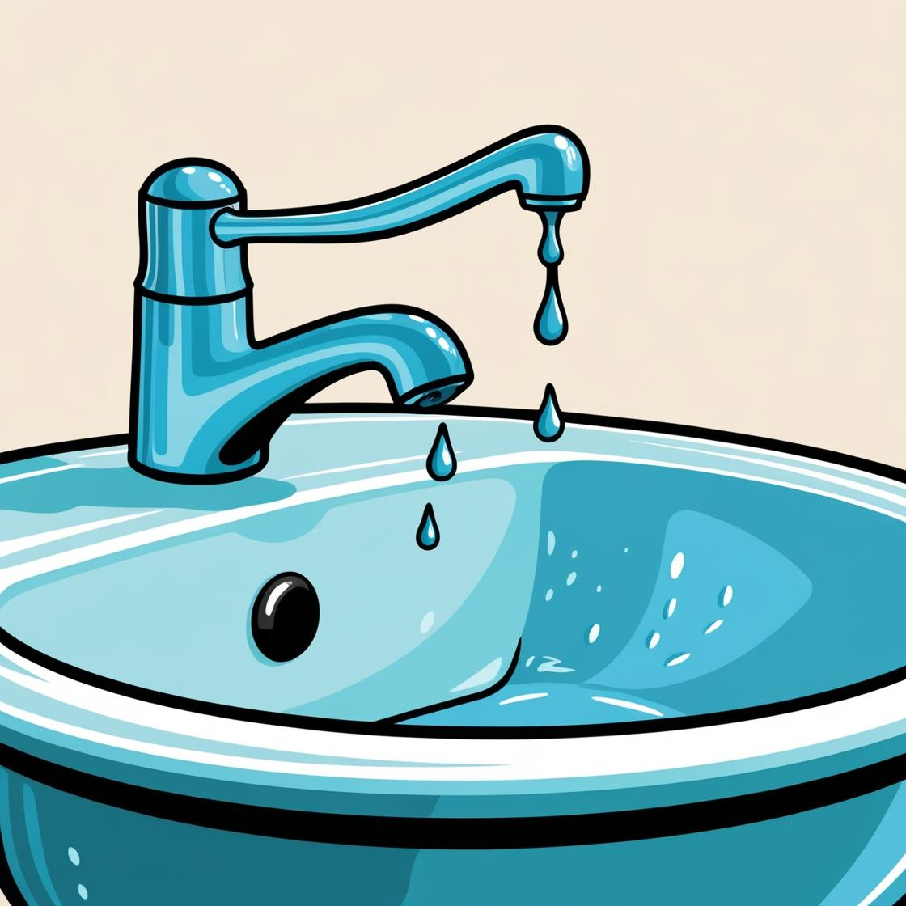

O desperdício de água acontece de muitas formas
E às vezes as pessoas estão tão acostumadas a fazer isso que não se dão conta do quanto de água estão gastando.
Olhe alguns exemplos:

Deixar a torneira aberta ao lavar a calçada

Escovar os dentes com a torneira ligada

A torneira não é fechada corretamente e fica pingando

Lavar o carro com excesso de água da mangueira